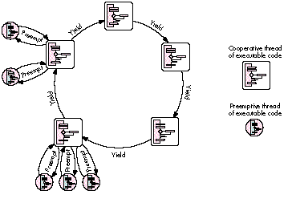

Let us introduce you to the latest addition to the Macintosh Toolbox -- the Thread
Manager. The Thread Manager enables concurrent programming so that you can
provide true multitasking within your application. We give a quick overview of the
Thread Manager and then move on to discuss advanced programming techniques not
found in the Thread Manager documentation.
The Thread Manager is a new part of the Macintosh Toolbox that provides both
cooperative and preemptive threads of execution within an application. Although it's
available only within your application and is not used for systemwide preemption, you
can take advantage of it in many valuable ways:
The Thread Manager has all the rights and privileges of other services in the
Macintosh Toolbox, such as a trap interface to avoid linking a library into your code
and header files for C, Pascal, and assembly-language programmers. It's a fully
supported product and will be around for years to come. You can license the Thread
Manager through Apple's Software Licensing group (AppleLink SW.LICENSE). The
Thread Manager works on all Macintosh platforms running System 7 or later.
This section describes the two types of threads -- cooperative and preemptive -- and
the basic services for creating, scheduling, and deleting threads and gathering thread
status. It also discusses the main thread, code organization, and thread disposal.
COOPERATIVE THREADS
Cooperative threads allow cooperative multitasking. They're the easiest to use in terms
of scheduling and accessibility to Toolbox traps. Everything you can do today in a
standard application you can do with a cooperative thread -- memory allocation, file
I/O, QuickDraw, and so on. Cooperative threads yield to other cooperative threads only
when the developer explicitly makes one of the Thread Manager yield calls or changes
the state of the current cooperative thread.
Cooperative threading in the Thread Manager is similar to the cooperative threading in
the Threads Package made available through APDA a few years ago (see "Threads on the
Macintosh" indevelop Issue 6). In fact, this library should no longer be used since the
Thread Manager is replacing it as the preferred method. Converting your applications
from the Threads Package to the Thread Manager is easy as long as you don't rely
heavily on the internal data structures provided by the Threads Package. The big
advantage to using the Thread Manager is that thread stacks are register swapped, not
block moved, during a context switch.
PREEMPTIVE THREADS
Preemptive threads allow true multitasking at the application level. Whenever the
application gets time from the Process Manager, preemptive threads for that
application are allowed to run. Unlike cooperative threads, which execute only when a
previously running cooperative thread explicitly allows it, preemptive threads may
interrupt the currently executing thread at any time to resume execution. You can
make the preemptive thread yield back to the just-preempted cooperative thread with
any of the Thread Manager yield calls. Alternatively, a preemptive thread can simply
wait for its time quantum to expire and automatically yield back to the cooperative
thread it interrupted. If the interrupted cooperative thread is in the stopped state, the
next available preemptive thread is made to run. Preemptive threads then preempt
each other, in a round-robin fashion, until the interrupted cooperative thread is made
ready. Figure 1 illustrates the default round-robin scheduling mechanism for threads.
For situations where you don't want a thread to be preempted, the Thread Manager
provides two calls for turning off preemption (see the next section). These calls don't
disable interrupts, just thread preemption.

Figure 1 Round-Robin Scheduling Mechanism Because a preemptive thread can
usually "interrupt" cooperative threads and doesn't need to explicitly use the API to
yield to other threads, preemptive threads have to conform to the guidelines set up for
code executed at interrupt time. Don't make any calls that are listed inInside Macintosh
X- Ref , Revised Edition, Appendix A, "Routines That Should Not Be Called From Within
an Interrupt." No moving of memory is allowed and definitely no QuickDraw calls
should be made. QuickDraw calls may seem tempting and may even appear to work, but
they fail on many occasions and can corrupt other parts of memory in subtle ways that
are very difficult to debug. (QuickDraw GX was designed to be reentrant, so
preemptive threads may make use of the QuickDraw GX feature set if they follow the
rules set up by QuickDraw GX.) If there's only one thing you learn in this article,
make sure it's this:preemptive threads must follow interrupt-time rules!
THE THREAD MANAGER API
There are several data types declared in the Thread Manager API that determine the
characteristics of a thread. These include the type of thread you're dealing with
(cooperative or preemptive), the state of a thread (running, ready, or stopped), and a
set of options for creating new threads. With the thread creation options, you can
create a thread in the stopped state (to prevent threads from beginning execution
before you want them to), create a thread from a preallocated pool of threads (which is
how you would create a new thread from a preemptive thread), or tell the scheduler
not to save FPU state for the new thread (to reduce scheduling times for threads that
don't use the FPU). These creation options are combined into one parameter and
passed to the routines that create new threads.
General-purpose services make it possible to create a pool of preallocated threads and
determine the number of free threads in the pool, get information on default thread
stack sizes and the stack currently used by a thread, and create and delete threads.
There are basic scheduling routines for determining the currently running thread and
for yielding to other threads. You can also use the preemptive scheduling routines --
ThreadBeginCritical and ThreadEndCritical -- to define critical sections of code. A
critical section of code is a piece of code that should not be interrupted by preemptive
threads -- because it's changing shared data, for example. The use of critical sections
of code is needed to prevent interference from other threads and to ensure data
coherency within your code. Note that preemptive threads run at the same hardware
interrupt level as a normal application, andcalls to ThreadBeginCritical don't disable
hardware interrupts; they simply disable thread preemption .
Advanced scheduling routines enable you to yield to specific threads and to get or set
the state of nearly any thread. (You can't set a thread to the running state or change the
state of the currently running thread if it's in a critical section of code.) Custom
context-switching routines allow you to add to the default thread context and may be
associated with any thread on a switch-in and/or switch- out basis. Any thread may
have a custom context switcher for when it gets switched in and a different switcher
for when it gets switched out. In addition, a custom scheduling procedure may be
defined that gets called every time thread rescheduling occurs. All of these features
may be used by both types of threads.
The Thread Manager also provides debugging support: a program or debugger can
register callback routines with the Thread Manager so that it gets notified when a
thread is created, deleted, or rescheduled.
THE MAIN THREAD
When an application launches with the Thread Manager installed, the Thread Manager
automatically defines the application entry point as the main cooperative thread. The
main cooperative thread is commonly referred to as theapplication thread or main
thread . There are several guidelines you should follow regarding the main thread.
These aren't hard and fast rules, but just guidelines to keep you from having debugging
nightmares. Remember that cooperative threads must make explicit use of the Thread
Manager API to give time (yield) to other cooperative threads.
First, the Thread Manager assumes the main thread is the thread that handles the event
mechanism (WaitNextEvent, GetNextEvent, ModalDialog, and so on). Events that can
cause your application to quit should be handled by the main thread: the application
was entered through the main thread andshould exit through it as well. The Thread
Manager schedules the main thread whenever a generic yield call is made and an OS
event (such as a key press or mouse click) is pending. This is done to speed up
user-event handling; otherwise, it could take a long time before the main thread got
time to run, because of the round-robin scheduling mechanism used for cooperative
threads. In general, all event handling should be done from the main thread to prevent
event-handling confusion. For example, if the main thread calls WaitNextEvent while
another thread is calling GetNextEvent while yet another thread is calling ModalDialog,
and they're all yielding to each other, sorting out which event belongs to which thread
becomes a nightmare. Just let the main thread handle all events. Your application will
run faster and work better in the long run.
The second guideline is to avoid putting the main thread in a stopped state. Doing so is
perfectly legal but can lead to some exciting debugging if your application makes
incorrect assumptions about the state of the main thread.
Last but not least, be sure you call MaxApplZone from the main thread to fully extend
your application heap before any other cooperative threads get a chance to allocate, or
move, memory. This requirement is due to the limitation on cooperative threads
extending the application heap -- they can't.
DISPOSING OF THREADS
When threads finish executing their code, the Thread Manager calls DisposeThread.
Preemptive threads are recycled to avoid moving memory. Recycling a thread causes
the Thread Manager to clear out the internal data structure, reset it, and place the
thread in the proper thread pool. (There are two pools, one for cooperative and one for
preemptive threads.) Since recycling a thread doesn't move memory, preemptive
threads can dispose of themselves and other threads safely.
The Thread Manager handles disposing of threads automatically, so it's not necessary
for the last line of your code to call DisposeThread unless you want to -- for example,
to recycle all terminating cooperative threads. DisposeThread takes three parameters:
the thread ID of the thread to be disposed of, a return value to return to the creator of
the thread, and a Boolean flag that tells the Thread Manager whether or not to recycle
the thread. A preemptive thread should only call DisposeThread with the recycle flag
set to true.
The Thread Manager API also defines a routine, SetThreadTerminator, that allows your
application to install a callback routine to be called when a thread terminates --
which is when it's disposed of. You could use SetThreadTerminator to do any cleanup
needed by the application, but remember, you can't move memory during termination
of a preemptive thread because you're still in the preemptive state.
When your application terminates, threads are terminated as follows:
CODE ORGANIZATION
To use the Thread Manager most effectively, break your applications into discrete
functional pieces, similar to the code organization used for object-oriented
applications. Keep the code for event handling, window management, calculation, and
drawing separate. In general, design your code such that the discrete parts may run
independently of each other, but in an organized and coherent way. Object-oriented
code, in general, is designed this way and is much easier to think about in a concurrent
manner. The following sections discuss techniques that you can use to write more
effective thread code. The examples illustrate what we learned from lots of trial and
error during the development of the Thread Manager, which should reduce the
development time for your threaded applications.
The return value has been set by the time a thread termination routine is executed.
In this way, a piece of code may be notified when the return result of a terminated
thread becomes valid. There's more information on thread termination routines in the
Thread Manager documentation.*
When creating a thread, you can pass in both a thread input parameter and a return
value storage location. The Thread Manager defines the input parameter as a void* and
the return parameter as avoid**. Don't let the messy C-language semantics get you
down; it's actually quite easy to understand.
The Thread Manager assumes the input parameter is the size of a void* (a 32-bit long
word for today's 680x0 applications) and is passed to your thread as such. Any value
may be passed as the input parameter, as long as it's the size of a void*. Passing nil as
this parameter will simply pass nil -- not nothing -- as your thread's input
parameter.
The return parameter is a little messier. In asking for a void**, the Thread Manager
is asking for the memory location to store the void* returned by the thread. If nil is
passed as the return value storage location, the Thread Manager assumes there's no
return value and won't bother to set it on thread completion. Your thread may return
any value as long as it's thesize of a void*. The address passed in as the return value
storage location can be simply the address of a long-word local variable (a long word
is the size of a void*) or can be as complicated as the address of a global variable
record pointer. The idea is that the Thread Manager wants, as the return value
storage location, the address in which to store a value the size of a void*. The Thread
Manager stores the returned value at thread termination time by using either a return
(x) statement or a DisposeThread call.
Don't pass the address of a short-word local variable as the return value storage
location, because a short word is shorter than a void*. When the thread terminates,
the Thread Manager will slam all 32 bits of the return value (the size of a void*) into
the short word, destroying the high word of your next defined variable. You must also
make sure the storage location used for the return parameter is valid at the time the
thread terminates. For example, if you use a local variable as the storage location, you
need to be sure the new thread will terminate before you return from the routine that
created it (that is, before the local variable goes out of scope).
The following code samples show two methods of sending in thread parameters and
returning thread results. First let's define some constants and the record structure
used in the example:
#define kNoCreationOptions 0 /* Just use the standard default */
/* creation options. */
#define kDefaultThreadStackSize 0 /* Zero tells the Thread Manager */
/* to use the default value. */
struct ExampleRecord {
long someLongValue;
short someShortValue;
};
typedef struct ExampleRecord ExampleRecord;
typedef ExampleRecord *ExampleRecordPtr;
The kNoCreationOptions #define specifies the default creation options. These options
create a thread using newly allocated memory from the Memory Manager with the
thread in the "ready" state; the thread will have its FPU context switched during a
reschedule. The kDefaultThreadStackSize #define tells the Thread Manager to use the
default stack size for the thread.
Now let's look at the routine prototypes and thread parameters:
pascal long ExampleOne (long);
pascal ExampleRecordPtr ExampleTwo
(ExampleRecordPtr inputRecordParam);
void ParametersExample (void)
{
ThreadID tempThreadID;
OSErr err;
long myLong;
short myShort; Boolean notDone = true;
long longResult = -1;
ExampleRecordPtr recordOutResult = nil;
ExampleRecord recordInParam;
In the call to create the first thread, the numeric value 42 is passed in as the input
parameter. The return value storage location is the address of a long-word local
variable. Remember, you can't return from this function until the new thread
terminates -- the local variable return value storage must stay valid.
err = NewThread(kCooperativeThread,
(ThreadEntryProcPtr)(ExampleOne),
(void*)42, kDefaultThreadStackSize, kNoCreationOptions,
(void**)&longResult, &tempThreadID);
if (err)
DebugStr("\p Could not make coop thread 1");
To create the second thread, the address of a locally allocated data structure is passed
as the input parameter. The return value storage location is the address of a local
variable used to hold a pointer to the type of data structure to be used for storing the
return value. Again, you can't return from this function until the new thread
terminates.
recordInParam.someLongValue = 0xDEADBEEF;
recordInParam.someShortValue = 0xBADD;
err = NewThread(kCooperativeThread,
(ThreadEntryProcPtr)(ExampleTwo),
(void*)&recordInParam, kDefaultThreadStackSize,
kNoCreationOptions,
(void**)&recordOutResult, &tempThreadID);
if (err)
DebugStr("\p Could not make coop thread 2");
Now that the two threads are created and ready to run, the code sits in a loop handling
user events, yielding, and waiting for the threads to complete their work.
while (notDone)
{
YieldToAnyThread(); /* Other threads run. */
This code looks to see whether the first thread has completed and, if it has, goes off and
does what computers do best -- compute on the data.
if (longResult != -1)
{
GoHandleThreadReturnResult(longResult);
longResult = -1; /* Reset the value. */
}
Now the code checks to see whether the second thread has completed. If there's a
non-nil value in recordOutResult, the data is available. It's then sucked out of the
record into the local variables and sent on its way to be used by the application. Notice
that the record structure that was allocated by the second thread is disposed of.
if (recordOutResult != nil)
{
myLong = recordOutResult->someLongValue;
myShort = recordOutResult->someShortValue;
DoStuffWithParams(myLong, myShort);
DisposePtr((Ptr)recordOutResult); /* Toss it. */
recordOutResult = nil; /* Neutralize it. */
}
/* Handle user events until we quit. */
GoHandleEvents(¬Done);
/* WaitNextEvent event handling. */
}
return; /* Out of here. */
}
In the code for the first thread, both the input and output parameters are longs, and the
thread simply returns the value sent to it. The important point here is that both the
input and output parameters are the size of a void*.
pascal long ExampleOne (long inputParam)
{
return (inputParam); /* Must be the size of a void*. */
}
The code for the second thread is a little more complex. Here, we allocate the storage
needed for the record that will be passed back to the creator. It's the creator's duty to
dispose of the data after using it. The record elements from the input parameter are
used as the source material for the elements within the record being returned to the
creator. Again, both the input and output parameters are the size of a void*.
pascal ExampleRecordPtr ExampleTwo
(ExampleRecordPtr inputRecordParam)
{
ExampleRecordPtr myRecordPtr;
myRecordPtr = NewPtr(sizeof(ExampleRecord));
myRecordPtr->someLongValue = inputRecordParam->someLongValue;
myRecordPtr->someShortValue = inputRecordParam->someShortValue;
return (myRecordPtr); /* Must be the size of a void*. */
}
If a preemptive thread can preempt, it will preempt. This can cause problems,
especially when you create new preemptive threads. When you create a preemptive
thread in the ready state, it's free to run whenever preemption occurs. This could
mean that your preemptive thread fires off before data it might need is available or set
up. There are two simple solutions, illustrated in the examples that follow: create the
preemptive thread in the stopped state and wake it up when you're ready to let it run,
as shown in the first example, or wrap all creation of "ready" preemptive threads
within critical sections, as shown in the second example. Remember that preemptive
threads can't preempt code that's wrapped within critical sections.
Here's the example of creating a preemptive thread in the stopped state:
pascal void* aThread (void* parameter)
{
/* Preemptive threads don't need to call Yield. */
while (true); /* Infinite loop. */
}
void somefunction (void)
{
ThreadID theThreadID;
OSErr theError;
theError = NewThread(kPreemptiveThread, /* Type of thread */
aThread, /* Thread entry point */
nil, /* Input parameter */
kDefaultThreadStackSize, /* Stack size */
kNewSuspend, /* Creation options */
nil, /* Return result */
&theThreadID); /* New thread ID */
if (theError != noErr)
DebugStr("\pFailed to create thread");
. . .
/* Now wake the thread up. */
theError = SetThreadState(theThreadID, /* Thread to set */
kReadyThreadState, /* New state */
kNoThreadID); /* Suggested thread */
if (theError) != noErr
DebugStr("\pFailed to set the preemptive thread to the ready
state.");
}
The parameter kNewSuspend in the NewThread call tells the Thread Manager to create
the thread in the stopped state. The SetThreadState call is used to wake up the thread.
The last parameter to SetThreadState suggests to the Thread Manager which thread to
execute after this call; this parameter is used only if the state of the currently
executing thread is being changed. At this point, the preemptive thread is allowed to
begin execution whenever it can.
Here's how to create a preemptive thread within a critical section:
pascal void* aThread (void *parameter)
{
/* Preemptive threads don't need to call Yield. */
while (true); /* Infinite loop. */
}
void somefunction (void)
{
ThreadID theThreadID;
ThreadBeginCritical(); /* Disable preemption. */
theError = NewThread(kPreemptiveThread, aThread, nil,
kDefaultThreadStackSize, kNoCreationOptions, nil,
&theThreadID);
if (theError != noErr)
DebugStr("\pFailed to create a preemptive thread");
ThreadEndCritical(); /* Enable preemption. */
}
AVOIDING QUICKDRAW FROM PREEMPTIVE THREADS
As mentioned earlier, you can't call QuickDraw from preemptive threads because
QuickDraw isn't interrupt safe and you have to obey the rules of executing during
interrupt time when you use preemptive threads. There's no way around this, but
youcan draw from preemptive threads with some extra work.
First you need to write your own primitives for drawing. This can be as simple as
blasting pixels with *(pixelPtr) = 0xFFFF or as complex as writing your own
primitives for all drawing. Next you create a GWorld for your preemptive thread to
draw into. The idea is to modify this GWorld and then later use CopyBits from a
cooperative thread to blast it to the screen. There are just a couple of things to
remember before you start using the preemptive thread's GWorld: make sure you lock
down the PixMap handle within the GWorld using HLock and make sure you call
LockPixels for that GWorld. This guarantees there won't be any memory moving while
you're drawing into the GWorld with preemptive threads.
This section provides code examples for creating your own scheduler and
context-switching routines. Figure 2 shows how your custom scheduler and custom
context-switching routines are executed in conjunction with the Thread Manager's own
scheduling routines.
Figure 2 Thread Scheduling With Custom Scheduler and Context Switcher
CUSTOM SCHEDULERS
Occasionally, the YieldToThread(ThreadID) call is insufficient as a thread-scheduling
mechanism. Assigning a custom scheduler function gives localized control over thread
scheduling within your application. From this function you can inform the Thread
Manager which thread you would like to schedule. Here's the header information that
deals with custom schedulers (it's extracted from Threads.h):
/* Information supplied to the custom scheduler */
struct SchedulerInfoRec {
unsigned long InfoRecSize;
ThreadID CurrentThreadID;
ThreadID SuggestedThreadID;
ThreadID InterruptedCoopThreadID;
};
typedef struct SchedulerInfoRec SchedulerInfoRec;
typedef SchedulerInfoRec *SchedulerInfoRecPtr;
typedef pascal ThreadID (*ThreadSchedulerProcPtr)(SchedulerInfoRecPtr
schedulerInfo);
Note that the Thread Manager passes the custom scheduler the ID of the current thread
(CurrentThreadID) and the ID of the thread that the Thread Manager is going to
schedule (SuggestedThreadID). If a cooperative thread was preempted and has not yet
resumed execution, the ID of that thread (InterruptedCoopThreadID) is passed to the
custom scheduler; kNoThreadID is passed if there's no cooperative thread waiting to
resume from being preempted. With this information, all you have to do is tell the
Thread Manager which thread to execute next by returning the thread ID of the thread
you want to run.
There's one rule you must follow when returning a thread ID: if the value of
InterruptedCoopThreadID is not equal to 0, return the InterruptedCoopThreadID value
or the ID of any ready preemptive thread. This is because scheduling a different
cooperative thread while another cooperative thread has been preempted would cause
cooperative thread preemption and could result in a system misunderstanding (crash).
If you don't care which thread the Thread Manager schedules next, you can just return
the constant kNoThreadID. If the value of CurrentThreadID is kNoThreadID, the Thread
Manager schedules the first available ready thread by default; your custom scheduler
may override this.
During the execution of a custom scheduler, certain conditions exist: preemption is
disabled to take care of any reentrancy problems and your A5 world is not guaranteed
to be valid. You're probably thinking, "Geez, I have to worry about A5!" We show you a
quick way to get around that in the example below, by using Gestalt to store A5. A few
more things about custom schedulers: You can't yield from within a custom scheduler,
nor can you cause scheduling to recur from this function. Also, only ready and running
threads are valid for rescheduling -- and you can't call SetThreadState from the
custom scheduler.
OK, enough background -- here's the custom scheduler example:
#include "GestaltValue.h" /* Gestalt utility. */
pascal ThreadID myThreadScheduler
(SchedulerInfoRecPtr mySchedulerInfo)
{
long currentA5, myA5;
ThreadTaskRef currentTaskRef;
/* The task ref is our Gestalt selector. */
GetThreadCurrentTaskRef(¤tTaskRef);
/* Get application's A5. If we can't, let Thread Manager do it */
/* all. */
if (Gestalt(currentTaskRef, &myA5) != noErr)
return kNoThreadID;
/* Was a cooperative thread preempted? If so, let Thread */
/* Manager continue. */
if (mySchedulerInfo->InterruptedCoopThreadID != kNoThreadID)
return mySchedulerInfo->InterruptedCoopThreadID;
/* Restore application's A5. */
currentA5 = SetA5(myA5);
/* Now you can determine what you want to do. You have access */
/* to all your globals, so select a thread to run. */
. . .
/* Restore the A5 we entered with. */
myA5 = SetA5(currentA5);
}
void InitAll (void)
{
long myA5;
ThreadTaskRef currentTaskRef;
OSErr myError;
/* Do standard initialization stuff here. */
. . .
myA5 = SetCurrentA5();
/* Get a unique value to use as a gestalt selector. */
GetThreadCurrentTaskRef(¤tTaskRef);
/* Set up a Gestalt value to use. */
if ((myError = NewGestaltValue(currentTaskRef, myA5)) != noErr)
{
/* Does it already exist? It better not! */
if (myError == gestaltDupSelectorErr)
DebugStr("\pWon't replace Gestalt selector.");
}
}
CUSTOM CONTEXT SWITCHERS
Now we come to the next feature the Thread Manager supplies for dealing with
scheduling: custom context switchers. You might ask, what is a thread context? The
default context of a thread consists of the CPU registers, the FPU registers if an FPU is
present, and a few internal globals. The saved data is as follows:
The thread context lives on the thread's A7 stack, and the location of the thread context
is saved at context switch time. Initially, the A5 register (which contains a pointer to
the application's A5 world) and the thread MMU mode (24-bit or 32-bit) is set to be
the same as the main thread. This allows all threads to share in the use of the
application's A5 world, which gives threads access to open files and resource chains,
for example. To allow preemption of threads that change the MMU operating mode, the
MMU mode is saved as part of the context of a thread. The FPU context is fully saved
along with the current FPU frame.
Custom context switchers don't need to worry about saving the standard CPU context,
as this is done by the Thread Manager. When writing a custom context switcher, keep
in mind that preemption is disabled while it executes. Just as in custom schedulers,
don't make any calls that can cause scheduling. In addition, when the custom context
switcher is being called, the thread context is in a transition state, so any calls to
GetCurrentThread won't work, nor will any calls to which you pass kCurrentThreadID
as a parameter. As with the custom scheduler, you're not guaranteed to have A5 set up
for you; the example below shows how to get around that.
You may have context switchers for when a thread is entered (switcher-inner ) and
when a thread is exited (switcher-outer ). Which context switcher to use is
determined by a parameter passed to the SetThreadSwitcher routine. Here's the header
information on custom context switchers (extracted from Threads.h):
typedef pascal void (*ThreadSwitchProcPtr)(ThreadID
threadBeingSwitched,
void *switchProcParam);
pascal OSErr SetThreadSwitcher (ThreadID thread, ThreadSwitchProcPtr
threadSwitcher, void *switchProcParam, Boolean inOrOut);
Besides the selector for whether the switcher is an inner or an outer, the application
can supply a parameter to the switch function. This parameter may vary for every
thread, allowing you to write only one custom context switcher. It isn't necessary to
have a switcher for both entry and exit, and all threads can share the same switcher.
One last thing to remember about switchers is that a switcher- inner is called
immediately before the thread begins execution at the entry point.
Here's an example of a custom context switcher:
#define switcherInner true
#define switcherOuter false
struct myContextSwitchParamStruct
{
long appsA5; /* Save application's A5. */
/* Anything else you may need for your custom context switch. */
. . .
};
typedef struct myContextSwitchParamStruct myContextSwitchParamStruct;
struct myContextSwitchParamStruct gMyContextSwitchParam;
pascal void* aThread (void *parameter)
{
/* Does something. */
YieldToAnyThread();
. . .
}
pascal void myThreadSwitchProc (ThreadID theThreadBeingSwitched,
void *theSwitchProcParam)
{
long currentA5, myA5;
/* A5 when our custom switcher was called. */
myA5 =
((myContextSwitchParamStruct *)theSwitchProcParam)->appsA5;
/* Restore application's A5. */
currentA5 = SetA5(myA5);
/* Now you can determine what you want to do. You have access */
/* to all your globals, so do any context stuff. */
. . .
/* Restore the A5 we entered with. */
myA5 = SetA5(currentA5);
}
void InitAll (void)
{
ThreadID theThreadID;
OSErr theError;
/* Do standard initialization stuff here. */
. . .
/* Set up A5 in switch parameter. */
gMyContextSwitchParam.appsA5 = SetCurrentA5();
/* Create a thread. */
theError = NewThread(kCooperativeThread, aThread, nil,
kDefaultThreadStackSize, kNoCreationOptions, nil,
&theThreadID);
if (theError != noErr)
DebugStr("\pFailed to create a cooperative thread");
theError = SetThreadSwitcher(theThreadID, myThreadSwitchProc,
(void*)&gMyContextSwitchParam, switchInner);
if (theError != noErr)
DebugStr("\pFailed to set custom context switcher-inner");
. . .
}
Aren't you tired of having your dialogs hang up your application while you wait for the
user to do something? With the Thread Manager you can alleviate this problem by
making only one call, YieldToAnyThread. Basically, if your program is broken into
multiple threads, you can put the dialog handler in one of those threads (usually the
main thread is best) and have the dialog's filter procedure call YieldToAnyThread. This
gives any other threads that are waiting time to run. When the user makes a choice in
the dialog, the main thread is scheduled automatically by the Thread Manager so that
your application can handle that event immediately. While the user is getting a cup of
coffee, your application can finish whatever other tasks are appropriate, without
slowing the machine down.
In the following example, YieldFilter is a filter procedure for a dialog that just calls
YieldToAnyThread, to give other threads time while the dialog is in the front. This
allows threads "behind" the dialog to continue to process information.
pascal boolean YieldFilter (DialogPtr theDialogPtr,
EventRecord *theEvent, short *theItemHit)
{
/* Yield to whoever wants to run. */
YieldToAnyThread();
/* Call the 7.0 standard filter procedure defined in */
/* Dialogs.h. */
return (StdFilterProc(theDialogPtr, theEvent, theItemHit));
}
/* The DoOKDialog function just handles a simple OK dialog. */
void DoOKDialog (short dialogID)
{
DialogPtr theDialog;
short itemHit;
GrafPtr savePort;
OSErr theError;
GetPort(&savePort);
if ((theDialog = GetNewDialog(dialogID, NULL, (Ptr)-1)) != NULL)
{
SetPort(theDialog);
ShowWindow(theDialog);
do
{
ModalDialog(YieldFilter, &itemHit);
} while (itemHit != okButton);
DisposDialog(theDialog);
} else
DebugStr("\pCould not find dialog");
SetPort(savePort);
}
In general, thread-blocking I/O occurs when code making an I/O call sleeps until the
I/O call completes. The basic problem with doing thread-blocking I/O with the Thread
Manager is that threads are application based, not systemwide Device Manager I/O
based. This means that threads are really good at doing work at the application level
but aren't designed to auto-block on I/O -- that's your job. Fortunately, the Thread
Manager provides all the tools needed to create your own thread-blocking I/O.
I/O WITH COOPERATIVE THREADS
Let's suppose you use a thread to make an asynchronous I/O call. Then the thread goes
to sleep, waiting for the completion routine to wake it up. The problem is the
completion routine can (and will) fire off before the thread is able to be put to sleep
-- there's a window of misfortune after the thread makes the asynchronous call and
before it completes the sleep call. Having nothing to do, the completion call just
returns. The thread then makes the sleep call and will sleep forever, waiting for a
completion routine that already occurred.
A completion routine, or any other code running on the Macintosh, may ask for the
state of a thread in an application by using GetThreadStateGivenTaskRef. Given a task
reference to a particular application and a thread ID, you can get the state of any
thread. If that thread is sleeping, you can call SetThreadReadyGivenTaskRef, which
will tell the Thread Manager to mark the thread as ready. The thread is not
actuallymade ready, justmarked ready. The next time a reschedule occurs in the
application, the marked thread ismade ready and is eligible to run.
Note that you can't just check to see if the thread isn't in the running state because it
could have been preempted (and probably was if possible) before it made the sleep
call, when the completion routine fired. You must wait for the thread to be in the
stopped state before making a call to SetThreadReadyGivenTaskRef.
One solution is to have the completion routine use one of the interrupt-safe routines
and ask the Thread Manager if the thread in question is sleeping yet and, if it is, ask
the Thread Manager to wake it up. If it's not sleeping yet, set up a timer task (or VBL
or Deferred Task Manager task) to ask again later, and keep asking until the thread is
sleeping; then wake it up.
As you can imagine, the "poll until thread stopped" solution is messy and time
consuming. A cleaner solution is to have a second thread whose only job in life is to
wake up the first thread after it goes to sleep (after making the asynchronous I/O
call). The following steps show how to do this for the two threads ThreadA and ThreadB.
From a cooperative thread -- ThreadA:
From the completion routine:
From the above truths, all ThreadB needs to do is set the thread state of ThreadA to
ready. The following steps wake up ThreadA from ThreadB:
The big concept is that only one cooperative thread can run at a time. Cooperative
threads can't preempt each other. The only way to get from one cooperative thread to
another is by yielding -- making a yield call or setting the state of the running
cooperative thread to ready or stopped. If a cooperative thread, ThreadA, sets itself to
stopped, another cooperative thread, ThreadB, knows that because it (ThreadB) is
running, ThreadA must be stopped. However, this scheme works only if there are other
(at least one) cooperative or preemptive threads that can run while the wake-up
thread and the thread making the I/O call are stopped. It's highly recommended that you
never stop the main thread; this will keep you safe for doing thread-blocking I/O with
a thread making an I/O call and a wake-up thread. Keeping the main thread ready also
keeps the Macintosh user interface active. To summarize the preceding steps: The
cooperative thread doing the I/O creates a cooperative wake- up thread (in the stopped
state), makes an asynchronous I/O call, and tells the Thread Manager to put itself in
the stopped state. The completion routine fires off any time after the I/O call and
makes a call to mark the wake-up thread as ready. Once the thread that made the I/O
call goes to sleep, rescheduling occurs and, if the wake-up thread is ready, it's made
eligible for running. Normal thread scheduling occurs until the wake-up thread is
run. The only thing the wake-up thread needs to do is tell the Thread Manager to set the
state of the thread making the I/O call to ready and return. Rescheduling will occur
and the thread that made the I/O call will continue on its merry way as if nothing had
happened. This process is illustrated in Figure 3.
Figure 3 Timeline State Flow Diagram for Threaded I/O
I/O THREAD BLOCKING EXAMPLE
Now let's see how the preceding solution looks in code. We begin by setting up
housekeeping and doing some administrative stuff. The extended parameter block
structure is used to store the parameter block used by the file system as well as data
used by the completion routine. The first element of the structure must be the file
system parameter block, as this is the address passed into the file system call. The
next two parameters are used by the completion routine to get the application task
reference and thread ID of the thread to wake up. These values are stored here because
completion routines can't access the application globals when they're called.
To finish up the housekeeping, we define the routine prototypes and the inline routine
GetPBPtr. Completion routines are passed the address of the parameter block in
register A0, so the GetPBPtr routine is needed to retrieve the parameter block.
struct ExtendedParamBlk {
/* PB must be first so that the file system can get the data. */
ParamBlockRec pb;
ThreadTaskRef theAppTask;
ThreadID theThread;
};
typedef struct ExtendedParamBlk ExtendedParamBlk;
typedef ExtendedParamBlk *ExtendedParamBlkPtr;
/* Routine prototypes. */
pascal void IOExampleThread (void);
pascal void WakeUpThread (ThreadID threadToWake);
void MyCompletionRoutine (void);
/* Completion routines are called with register A0 pointing to */
/* the parameter block. */
pascal ExtendedParamBlkPtr GetPBPtr(void) = {0x2E88};
/* move.l a0, (sp) */
This is a routine in the main thread that creates a thread that makes an I/O call:
void KickOffAnIOThread (void)
{
ThreadID newCoopID;
OSErr theError;
theError = NewThread(kCooperativeThread,
(ThreadEntryProcPtr)IOExampleThread, nil,
kDefaultThreadStackSize, kNoCreationOptions, nil,
&newCoopID);
if (theError)
DebugStr("\p Could not make cooperative I/O thread");
/* Return and let the I/O thread do its thing! */
}
Below is the code for the thread that makes the I/O call -- IOExampleThread. It makes
an asynchronous I/O call with a completion routine that will wake up the wake-up
thread, which then wakes up IOExampleThread.
pascal void IOExampleThread (void)
{
ThreadID wakeupThreadID, meThreadID;
ThreadTaskRef theAppRef;
ExtendedParamBlk myAsyncPB;
OSErr theError, theIOResult;
/* Get the ID of IOExampleThread. */
theError = GetCurrentThreadID(&meThreadID);
if (theError != noErr)
DebugStr("\pFailed to get the current thread ID");
/* Get the application's task reference. */
theError = GetThreadCurrentTaskRef(&theAppRef);
if (theError != noErr)
DebugStr("\Could not get our task ref");
/* Create a wake-up thread. */
theError = NewThread(kCooperativeThread,
(ThreadEntryProcPtr)WakeUpThread, (void*)meThreadID,
kDefaultThreadStackSize, kNewSuspend, nil, &wakeupThreadID);
if (theError != noErr)
DebugStr("\pFailed to create a cooperative thread");
Here's where you prepare for the I/O call -- a simple asynchronous flush volume
command. Notice how we set the address of the completion routine. We also set up the
extended data needed by the completion routine -- the thread ID of the wake-up thread
and the application's task reference.
myAsyncPB.pb.ioParam.ioCompletion = (ProcPtr)MyCompletionRoutine;
myAsyncPB.pb.ioParam.ioResult = 0; /* Initialize the result. */
myAsyncPB.pb.ioParam.ioNamePtr = nil; /* No name used here. */
myAsyncPB.pb.ioParam.ioVRefNum = -1; /* The boot drive. */
myAsyncPB.theThread = wakeupThreadID;
myAsyncPB.theAppTask = theAppRef;
IOExampleThread makes the I/O call and then calls SetThreadState to put itself to sleep.
The first two parameters to SetThreadState indicate the thread to set, which is
IOExampleThread, and the state to set it to -- stopped. The kNoThreadID parameter
indicates that any ready thread can run next.
PBFlushVol((ParmBlkPtr)&myAsyncPB, async);
theError = SetThreadState(kCurrentThreadID, kStoppedThreadState,
kNoThreadID);
if (theError != noErr)
DebugStr ("\pFailed to put ourselves to sleep");
At this point, IOExampleThread is sleeping, but other threads are running (including
the main thread, because it's not nice to put it in the stopped state). Meanwhile, thread
scheduling is taking place, so when the completion routine executes and tells the
scheduler to place the wake-up thread in the ready queue, the wake-up thread can get
scheduled to execute. (Make sure the main thread doesn't quit the application with the
asynchronous I/O pending. You could run into problems when the completion routine
tries to run but no longer exists because the application is gone.)
Next the completion routine fires off and tells the Thread Manager to ready the
wake-up thread. The wake-up thread eventually runs and tells the Thread Manager to
ready the I/O thread. Then theI/O thread awakes and continues running as if nothing
happened, continuing with the rest of the code.
theIOResult = myAsyncPB.pb.ioParam.ioResult;
. . .
}
void MyCompletionRoutine (void)
{
ExtendedParamBlkPtr myAsyncPBPtr;
ThreadTaskRef theAppTaskRef;
ThreadID theThreadID;
ThreadState theThreadState;
OSErr theError;
/* Get the parameter block. */
myAsyncPBPtr = GetPBPtr();
/* Get the data. */
theAppTaskRef = myAsyncPBPtr->theAppTask;
theThreadID = myAsyncPBPtr->theThread;
/* See if the thread is stopped yet - just to be sure. */
theError = GetThreadStateGivenTaskRef(theAppTaskRef, theThreadID,
&theThreadState);
/* If we can get the thread state, go for it! */
if (theError == noErr)
{
/* If it's awake, we have problems. */
if (theThreadState != kStoppedThreadState)
DebugStr("\pWake-up thread is in the wrong state!");
/* Should be sleeping, mark it for wake up! */
else
SetThreadReadyGivenTaskRef(theAppTaskRef, theThreadID);
}
}
The wake-up thread eventually begins execution and has only one job -- to wake up
the thread that made the I/O call.
pascal void WakeUpThread (ThreadID threadToWake)
{
OSErr theError;
/* Wake up the specified thread. */
theError = SetThreadState(threadToWake, kReadyThreadState,
kNoThreadID);
if (theError != noErr)
DebugStr("\pFailed to wake our thread");
/* We've done our deed, so just return quietly and let it run. */
}
I/O WITH PREEMPTIVE THREADS
Things get a little tricky when the thread making the I/O call is preemptive -- not to
mention that you may not be allowed to make certain asynchronous I/O calls from
preemptive threads (you know, the interrupt routine rules and all that). To solve the
problem, all you do is force your preemptive thread to look like a cooperative thread.
Before you make the asynchronous I/O call, you need to begin a critical sectionwith the
ThreadBeginCritical routine. Also, since you can't create threads from preemptive
threads (again, the interrupt routine rules), you need to get the wake-up thread from
the thread pool you created earlier (you did create one, didn't you?). After the I/O
call, call SetThreadStateEndCritical rather than SetThreadState; this puts the thread in
the stopped state, ends the critical section to allow preemptive scheduling, and forces a
reschedule all at the same time. Then, when the wake-up thread gets run, it knows that
the thread that made the I/O call must be sleeping.
Here are some final thoughts before you dive in and start programming with the
Thread Manager:
We urge you to use the Thread Manager because it will be integrated directly into the
system software, and it will be upwardly compatible with the new RISC and OS
directions Apple is taking. If you start taking advantage of the Thread Manager now,
you'll only be more ahead in the future.
ERIC ANDERSON has been developing various parts of the Macintosh Toolbox and OS
for over five years. Having worked on System 7 virtual memory for the past four
years and the Thread Manager for the past two, he thinks that moving to Hawaii and
building boats is an excellent idea. Before Apple, he designed tower and street
crane-positioning simulation software and developed various software/hardware
systems for controlling live-action effects (read: pyrotechnics) for film
productions.*
BRAD POST (AppleLink BPOST) is a member of SMMFD (a geek club for
mathematical modeling and fractal design). His other hobbies include computer
graphics, skiing, surfing, playing Ultimate Frisbee, drinking Tied House Ale, working
out, and just living life to its fullest. Remember, no one gets outta here alive! *
The GestaltValue library, available on this issue's CD, provides the
NewGestaltValue, ReplaceGestaltValue, and DeleteGestaltValue functions.*
For more information on completion routines, parameter blocks, and calling
routines asynchronously in general, see "Asynchronous Routines on the Macintosh" in
develop Issue 13.*
THANKS TO OUR TECHNICAL REVIEWERSDave Falkenburg, Michael Gough, C. K.
Haun, John Yen *